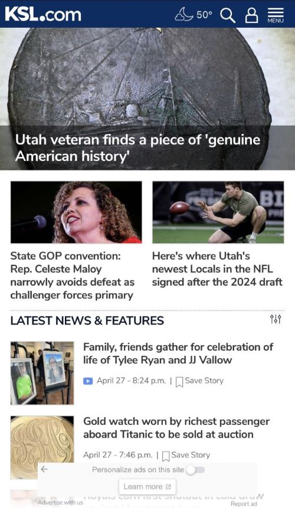

White Space & Clean Design
Thrive Life
thrivelife.com
The Thrive Life website uses the principle of white space and clean design very well. The products are displayed on white backgrounds with plenty of space around then, but is still visibly pleasing with the border around each box. The header has lots of space around each element. There is a lot of open, breathable spacing on the page.
Repetition
Walmart
walmart.comWalmart's website uses the design principle of repetition in their use of various sized rectangles. The rectangles have a different color base, making it not feel negatively repetative, but actually adds to the cohesive feel of the website. The alignment of the rectangles helps your eye to not become overwhelmed as you take in the site itself.
Visual Heirarchy
KSL News
ksl.com While also using the design principle of repetition, the KSL news website also employs the principle of visual heirarchy. In altering the sizing of the rectangle images, beginning at the top with the largest, moving through medium sized images and ending with smaller rectangles, the eye is naturally drawn down the page. This naturally leads one to believe that the largest images are more important.